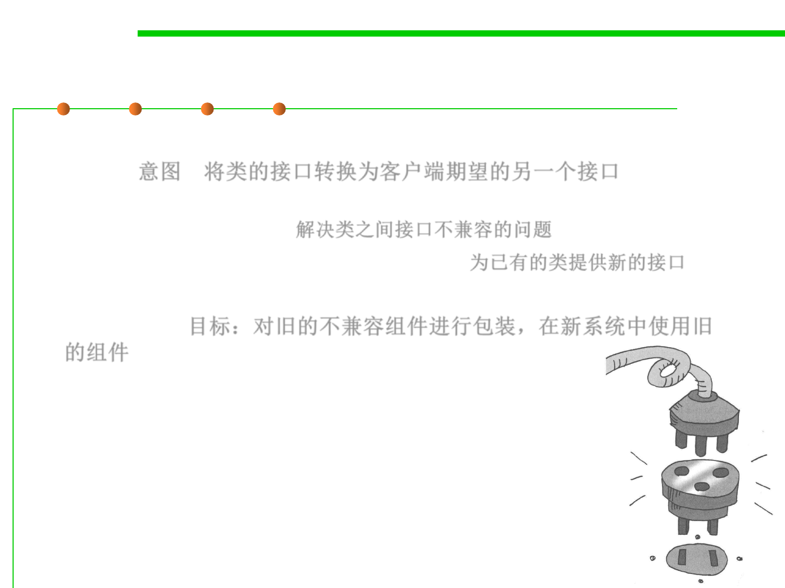

Adapter Pattern 适配器模式
5.3 Design Patterns for Reuse
▪ Intent: Convert the interface of a class into another interface clients
expect. 意图：将类的接口转换为客户端期望的另一个接口
– Adapter lets classes work together that couldn‘t otherwise because of
incompatible interfaces. 解决类之间接口不兼容的问题
– Wrap an existing class with a new interface. 为已有的类提供新的接口
▪ Objective: to reuse an old component to a new system (also called
“wrapper”) 目标：对旧的不兼容组件进行包装，在新系统中使用旧
的组件
▪ 加个“适配器”以便于复用